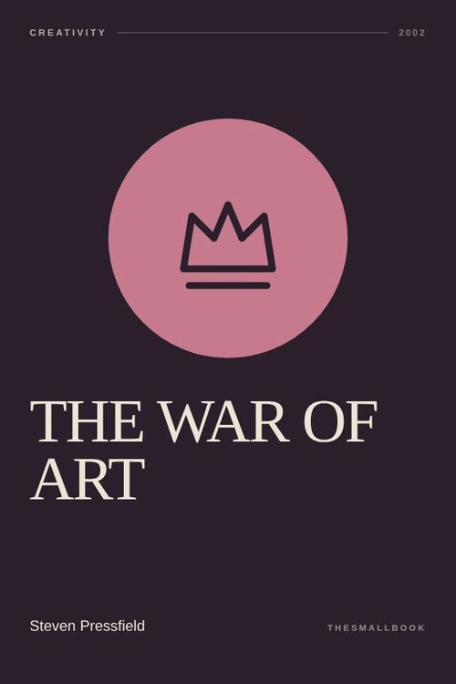
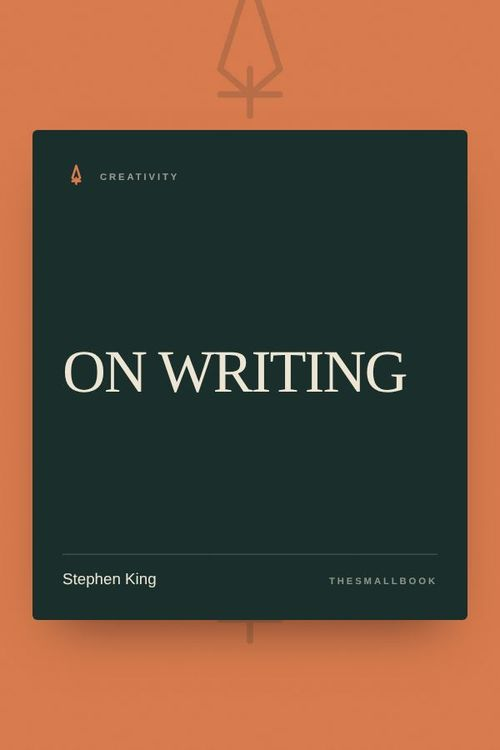
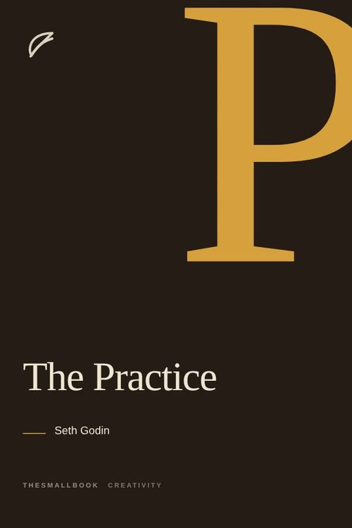

Library › Ask the Library › How do I overcome writer's block?
How do I overcome writer's block?
The short answer
Writer's block is resistance, not a shortage of talent. Write a shitty first draft with the door closed, and ship it, the muse rewards motion, not waiting.
The books behind the answer

The War of Art
Steven Pressfield · 2002 · 8 min · 6 lessons
There's a force whose sole mission is to stop you from doing your work. Naming it - Resistance - is half the war.
- Know Your Enemy: The Anatomy of Resistance: Resistance shows up hardest exactly when the work matters. Name it, then sit down anyway.

Bird by Bird
Anne Lamott · 1994 · 8 min · 6 lessons
Write shitty first drafts, take it bird by bird, and remember: perfectionism is the enemy of the people.
- Shitty First Drafts: Nobody writes well first time. Get the terrible version out, you can't fix what doesn't exist.

On Writing
Stephen King · 2000 · 8 min · 6 lessons
Writing is telepathy: the job is to get what's in your head into the reader's - clearly, honestly, every day.
- Write the Draft With the Door Closed: First drafts are for you alone. Speed and freedom first; the reader comes in the rewrite.

The Practice: Shipping Creative Work
Seth Godin · 2020 · 8 min · 6 lessons
Stop waiting for inspiration. The practice is showing up, shipping generously, and doing it again tomorrow.
- Ship It: Unshipped art is a hobby. Give it a public deadline and let the world improve it.
A failure that proves it
Why did Xerox PARC fail?
1979 · BUSINESS · Loss: The entire PC revolution
Xerox invented the future and never shipped it. Creation without delivery is a museum piece.
Inventing it means nothing; commercializing it means everything. Companies don't die from lack of ideas - they die from the distance between the lab and the boardroom.
Questions people ask next
Can I read this in Hindi?
Yes. This answer is written in simple English. Open any linked book and choose Hindi or Hinglish to read the full lessons in your language, with audio where available.